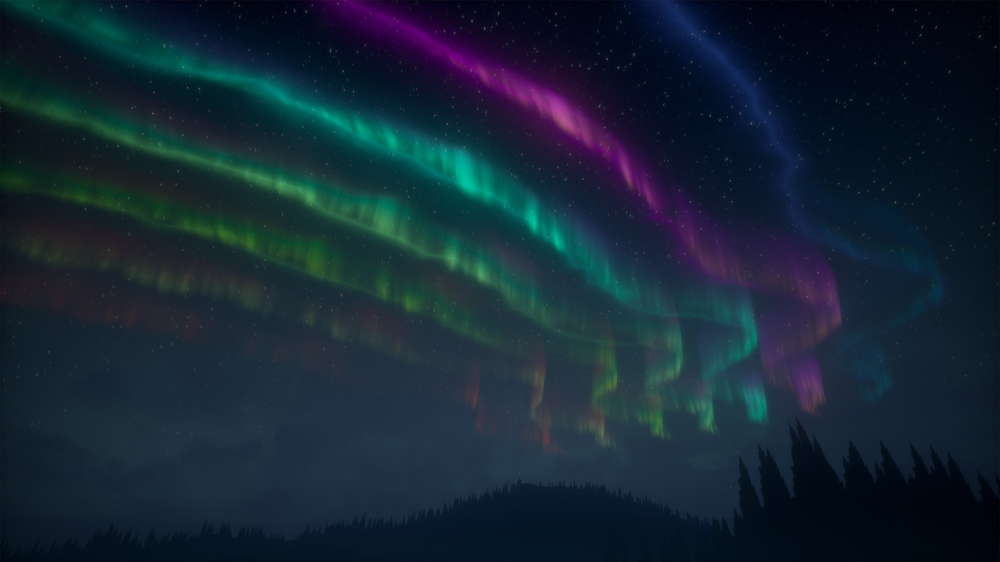
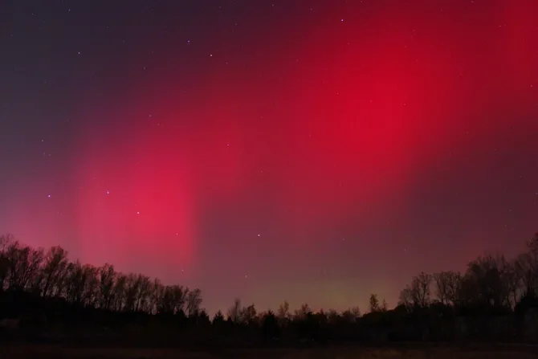
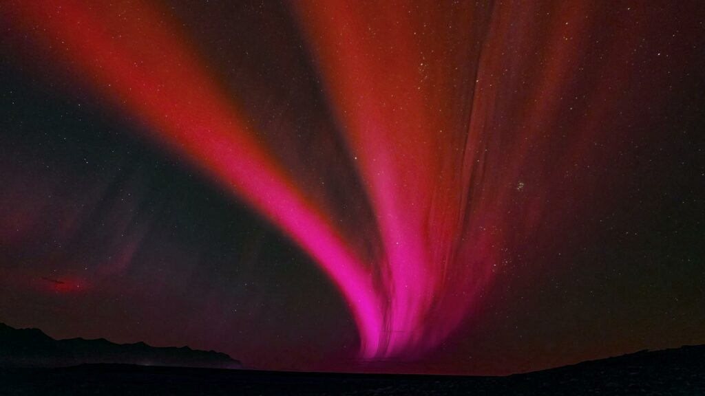
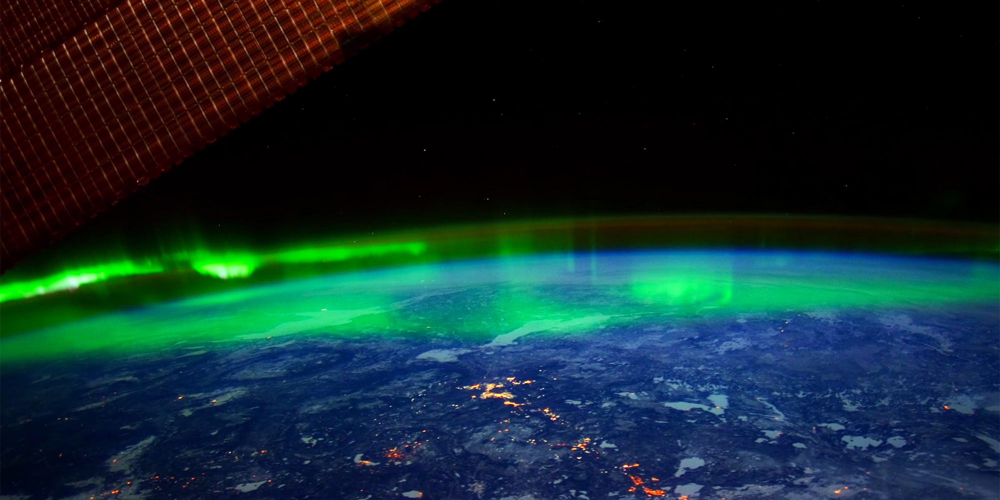
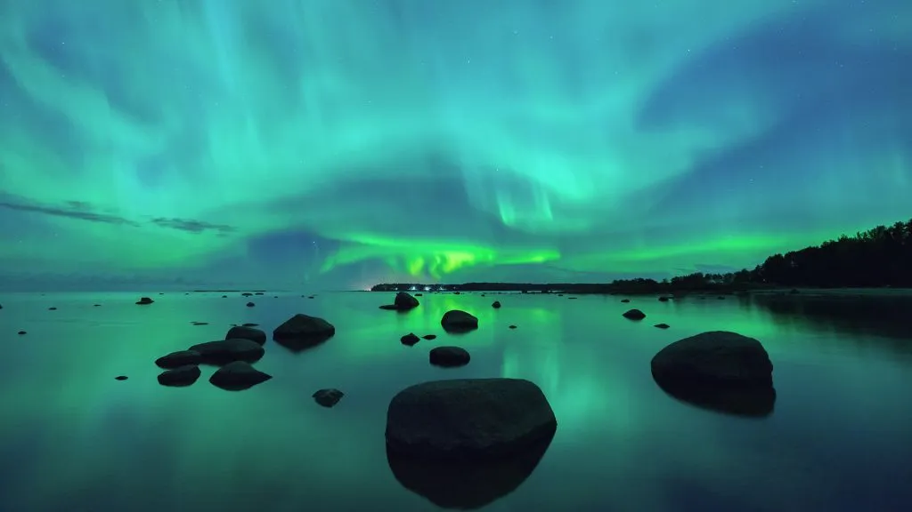
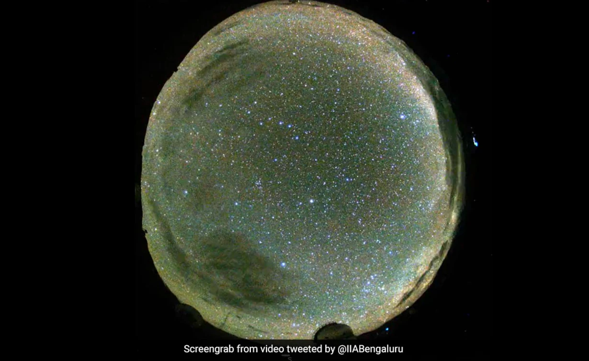

✰ THE HISTORY OF THE NORTHERN LIGHTS
Though it was Italian astronomer Galileo Galilei who coined the name "aurora borealis" in 1619 — after the Roman goddess of dawn, Aurora, and the Greek god of the north wind, Boreas — the earliest suspected record of the northern lights is in a 30,000-year-old cave painting in France.
Since that time, civilizations around the world have marveled at the celestial phenomenon, ascribing all sorts of origin myths to the dancing lights. One North American Inuit legend suggests that the northern lights are spirits playing ball with a walrus head, while the Vikings thought the phenomenon was light reflecting off the armor of the Valkyrie, the supernatural maidens who brought warriors into the afterlife.
Early astronomers also mentioned the northern lights in their records. A royal astronomer under Babylon's King Nebuchadnezzar II inscribed his report of the phenomenon on a tablet dated to 567 B.C., for example, while a Chinese report from 193 B.C. also notes the aurora, according to NASA.
The science behind the northern lights wasn't theorized until the turn of the 20th century. Norwegian scientist Kristian Birkeland proposed that electrons emitted from sunspots produced the atmospheric lights after being guided toward the poles by Earth's magnetic field. The theory would eventually prove correct, but not until long after Birkeland's 1917 death.
✰ WHAT ARE THE NORTHERN LIGHTS?
At any given moment, the sun is ejecting charged particles from its corona, or upper atmosphere, creating what's called the solar wind. When that wind slams into Earth's ionosphere, or upper atmosphere, the aurora is born. In the Northern Hemisphere, the phenomenon is called the northern lights (aurora borealis), while in the Southern Hemisphere, it's called the southern lights (aurora australis).
"These particles are deflected towards the poles of Earth by our planet's magnetic field and interact with our atmosphere, depositing energy and causing the atmosphere to fluoresce," said astronomer Billy Teets, the director of Dyer Observatory at Vanderbilt University in Nashville, Tennessee.
The bright colors of the northern lights are dictated by the chemical composition of Earth's atmosphere.
"Every type of atom or molecule, whether it's atomic hydrogen or a molecule like carbon dioxide, absorbs and radiates its own unique set of colors, which is analogous to how every human being has a unique set of fingerprints," Teets told Space.com. "Some of the dominant colors seen in aurorae are red, a hue produced by the nitrogen molecules, and green, which is produced by oxygen molecules."
While solar wind is constant, the sun's emissions go through a roughly 11-year cycle of activity. Sometimes there's a lull, but other times, there are vast storms that bombard Earth with extreme amounts of energy. This is when the northern lights are at their brightest and most frequent. The last solar maximum, or period of peak activity, occurred in 2014, according to the U.S. National Oceanic and Atmospheric Administration (NOAA), placing the next one in approximately 2025.
✰ AURORAS ON OTHER WORLDS
The colors of auroras are determined by the composition of the atmosphere. Earth’s auroras are mostly red and green. Red glow occurs due to the glow of oxygen, green — nitrogen. 
It is important to note that the Earth is not the only body in the solar system where auroras borealis occur. They can be seen on other planets that have an atmosphere. However, they may differ from terrestrial ones. But let’s talk about everything in turn.
✰ Auroras on Venus
Venus does not have its own magnetic field. However, this does not mean that it does not have aurora borealis. For many years, astronomers have observed unusual flashes on the night side of the planet, which usually coincided with periods of increased solar activity. It is now believed that this glow is due to the collision of solar wind particles with the Venusian atmosphere, which can be called an analogue of aurora borealis.
Unlike terrestrial, auroras on Venus are not limited by its poles. They are light and diffuse groups of spots, different in shape and intensity, which sometimes cover the entire disk of the planet. However, because the atmosphere of Venus contains a layer of dense haze, the auroras cannot be seen from the surface — only from space.
✰ Auroras on Mars
In distant past, Mars had its own magnetic field. Since then, a number of magnetized areas have remained in the planet’s crust. Because of this, Martian auroras can occur not only in the polar latitudes but also in equatorial regions of the Red Planet.
Opinions of scientists differ, as for whether future visitors to Mars will be able to see its auroras. The fact is that the great bulk of their radiation falls on the ultraviolet range. However, the results of some studies suggest that under certain conditions they can still be observed with the naked eye. It is estimated that the predominant color of Martian auroras should be blue with possible specks of red and green.
✰ Auroras on giant planets

The giant planets of the solar system have much stronger magnetic fields than ours. Therefore, their auroras are noticeably more powerful than the earth’s. At the same time, since these planets are “external” to the Earth, we can only see their day sides. Therefore, their auroras are lost in reflected sunlight.
✰ Auroras borealis on Saturn
As a result, astronomers have to study the auroras of giant planets in the infrared and ultraviolet ranges. These observations brought a number of surprises. It turned out that the aurora borealis on Saturn is the highest in the solar system. It is formed at an altitude of 1200 km.
As for Uranus, its magnetic poles do not even roughly coincide with the geographical ones. As a result, Uranian aurora borealis illuminates the sky just above the polar regions of the planet. They extend from the northern hemisphere to the equator and descend into the southern hemisphere.
Even more unusual are the auroras of Jupiter. Satellites of the giant planets directly affect the magnetosphere of the gas giant, where bright areas of aurora borealis are formed. Volcanic emissions from Io play a particularly important role in this process.
Finally, Ganymede is worth mentioning. It is the only satellite of the planet of the solar system that has its own magnetic field. The data collected by the Galileo and Juno devices show that radiance also appears periodically above its poles.
✰ WHERE AND WHEN TO SEE THE NORTHERN LIGHTS
Seeing the northern lights with your own eyes is a bucket-list item for astronomy lovers and travelers alike. Fortunately, they occur frequently.
"The northern lights are happening 24 hours a day, seven days a week, 365 days a year," said photographer Chad Blakely, owner of the northern lights tour company Lights Over Lapland. But that doesn't mean they're easy to spot; you need to be at the right place at the right time.
The best place to see the northern lights is any destination in the "auroral zone," the area within an approximately 1,550-mile (2,500 kilometers) radius of the North Pole, according to the Tromsø Geophysical Observatory in Norway. That's where the aurora most frequently occurs, though the phenomenon can creep farther south during particularly strong solar storms.
Within the auroral zone, it's best to be as far away from city lights as possible to maximize visibility. But it's pretty tricky to get into the middle of the Arctic wilderness, even with a guide, so it's best to base yourself in a destination with solid infrastructure, like Fairbanks, Alaska; Yellowknife, Canada; Svalbard, Norway; Abisko National Park, in Sweden; Rovaniemi, Finland; and pretty much anywhere in Iceland.
The best time of year to see the northern lights is between September and April, when the sky gets dark enough to see the aurora. (Far northern locales experience the midnight sun, or 24 hours of daylight in the summer.) The most action usually happens between 9 p.m. and 3 a.m., according to the Geophysical Institute of the University of Alaska Fairbanks. Keep the moon phases in mind, as a bright full moon might fill the night sky with light. Check local weather forecasts as well, because you won't be able to spot the aurora through the clouds.
✰ Northern Lights In India! Ladakh Witnesses Aurora For The 1st Time Ever
Aurora is one of the most beautiful phenomena on this planet. Usually, in order to witness this phenomenon, you’d have to travel all the way to Scandinavian or Nordic countries. However, this time, the aurora came to us in Ladakh! An Indian Institute of Astrophysics or the IIA Bengaluru, observatory managed to capture the unique phenomenon on camera! According to the IIA, this rare occurrence was due to a geomagnetic storm that hit the earth recently.
At 11:42 PM on 21 Apr the Sun launched a coronal mass ejection towards the Earth. This CME (speed of 500-600 km/s) was associated with an M1 class solar flare. The CME arrived at Earth late on April 23 at 10 PM.
This geoeffective CME led to an excellent night for auroral activity. The aurora came to lower-than-usual latitudes overnight leading to rare sightings of from Europe, China & Ladakh in India. Such a severe geomagnetic storm last occurred in 2015.